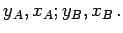
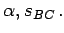
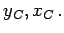
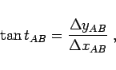
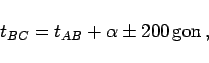
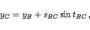
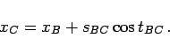
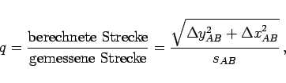
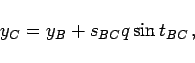
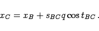

Inhalt Index DeskTop Bronstein

 Geometrie Ebene Trigonometrie Geodätische Anwendungen Koordinatentransformationen
Geometrie Ebene Trigonometrie Geodätische Anwendungen Koordinatentransformationen


Im rechtwinkligen Koordinatensystem sind die Koordinaten eines Neupunktes C durch Messungen im polaren örtlichen System zu ermitteln.
Gegeben:  Gemessen:  Gesucht: 
Lösung:
|  | (3.110a) |
|  | (3.110b) |
|  | (3.110c) |
|  | (3.110d) |
Sollte auch sAB gemessen worden sein, dann wird der Unterschied zwischen der örtlich gemessenen Strecke und der aus den Koordinaten berechneten Strecke mit dem Maßstabsfaktor q berücksichtigt:
|  | (3.111a) |
|  | (3.111b) |
|  | (3.111c) |